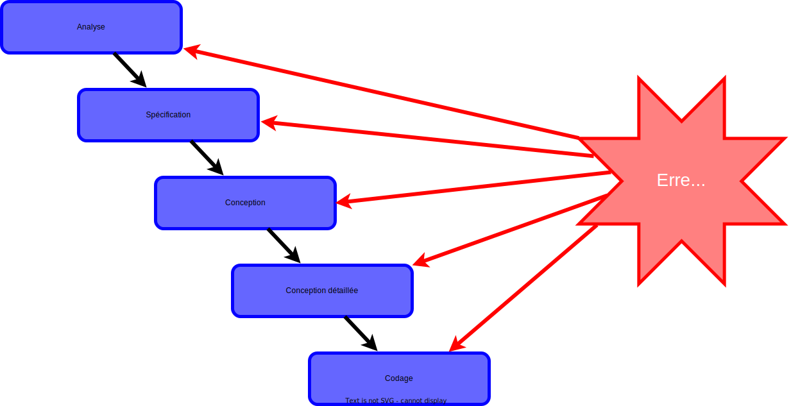
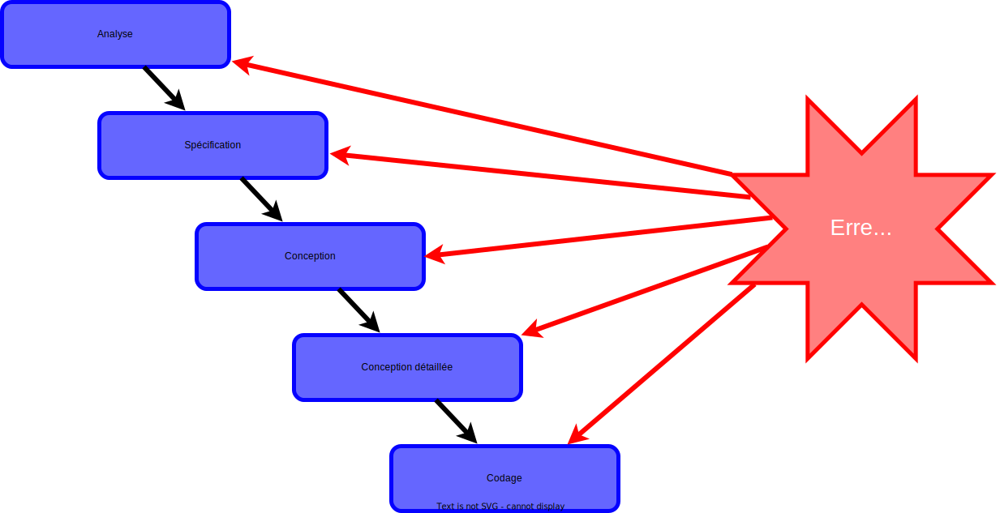
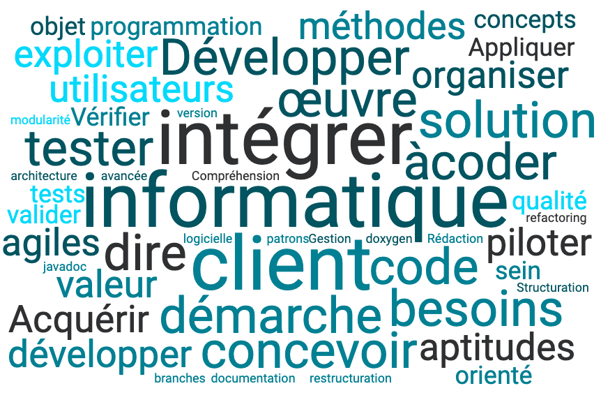

Qualité de développement
Présentation du cours
2A - Bachelor Universitaire de Technologie
IUT d'Orsay - Paris-Saclay
2023/2024
Idir AIT SADOUNE

-
Docteur en Informatique diplômé par l’ENSMA en 2010.
-
Thèse sur la modélisation et la vérification des services
par une approche basée sur le raffinement et sur la preuve.
-
Thèse sur la modélisation et la vérification des services
- Enseignant-chercheur au sein du département informatique de CentraleSupelec.
-
Chercheur au sein des pôles Modèles et Preuve
du LMF - Laboratoire Méthodes Formelles.
Discussion autours
des attentes des étudiants

Le logiciel informatique


Cycle de développement


 

Des erreurs possibles à toutes les étapes du développement.
Logiciels critiques
- Une défaillance dans un logiciel peut avoir des conséquences catastrophiques (humaines, financières, ...).
- Exemple du calculateur de bord d'Ariane 5

Situations à éviter !!!


Solutions
- Les règles et les techniques de programmation.
- Les méthodologies de conception et de développement.
- Le support des langages de programmation.
- Le test.
- Les méthodes formelles.
Solutions
- Les règles et les techniques de programmation.
- Les méthodologies de conception et de développement.
- Le support des langages de programmation.
- Le test.
- Les méthodes formelles.
Mots clés du cours
Contenu du cours
Conception Objets
Patrons de conception
Architecture logicielle

Programmation Objets
Patrons de conception
Restructuration code
Documentation avec javadoc

Gestion de versions
Organisation du cours
- Nature des enseignements
- cours/TD/TP $\to$ 12 séances $\times$ 3h
- Supports du cours : la page du cours
- Questions
- Avant, pendant et après le cours
- En dehors du cours
- Evaluation
- CC = (Moyenne des TPs)
- DS = ((DS1 + DS2) / 2) + (2 pts bonus)